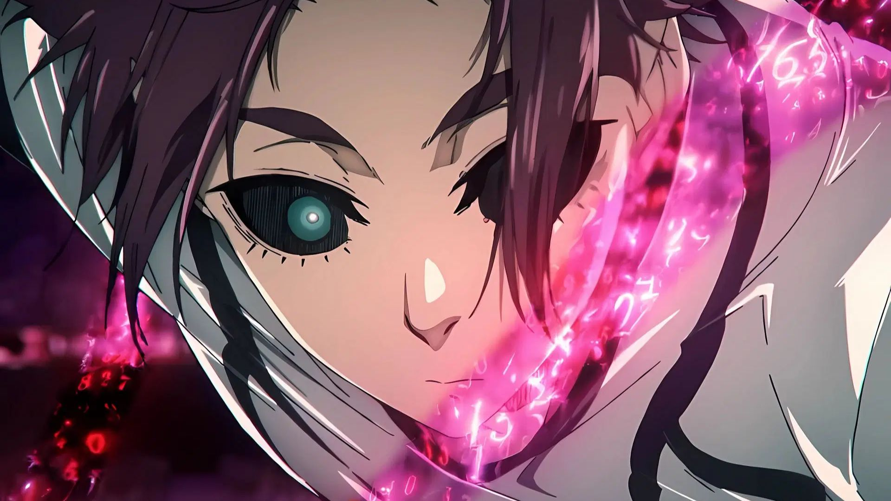

Dragon Ball Super: Broly
"Now hold on a sec. Having a name would definitely make us sound much cooler. This time it will be Gokuga... Vekugo... uh... how about Gogeta!" Gogeta in Dragon Ball Super Broly"
"“Essa é a história de um novo Saiyajin. A Terra está em paz após o Torneio do Poder. Percebendo que o universo ainda tem muitas pessoas poderosas, Goku passa todos os seus dias treinando para atingir níveis ainda mais altos. Então um dia, Goku e Vegeta são confrontados por um Saiyajin chamado Broly, que eles nunca viram antes. Os Saiyajins deveriam ter sido praticamente extintos com a destruição do planeta Vegeta, então o que esse está fazendo na Terra? O encontro entre esses três Saiyajins, que seguiram caminhos completamente diferentes, termina em uma batalha estupenda, com até o Freeza (de volta do Inferno) entrando na história”.
Bleach Remix Vol.19
"All throughout history, be it royals or samurai or whatever, this world has always been ruled by minorities! You're not the ones in the wrong. It's this world that's become too lenient towards idiots." Kūgo Ginjō in "Goodbye to Our Xcution"

A verdade escondida no emblema do shinigami substituto... os laços entre Ichigo e os shinigamis são colocados à prova.Ginjo deseja obsessivamente se vingar dos Shinigamis. Ichigo recupera seus poderes a partir da zanpakutou de Rukia. Quais as consequências para a Soul Society e para Ichigo com o embate entre o antigo e o novo Shinigami substituto?
Sobre Eu
Meu Nome é Felipe Monteiro de Assis.Nascido em 13 de Fevereiro (13/02) de 2009 com a faixa etaria atual de 16-17 anos.As áreas que mais procuro é Jogos,Arte e atualmente profissionalmente a área de Informática. O melhor jogador de Bridget e Sol (Guilty Gear Strive) no meu bairro (Mentira. . . Sei fazer nem especial no teclado 💔)